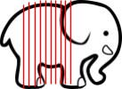

Writing Effective Use Cases- Alistair Cockburn
why not user stories?
work management versus documentation
an archeological puzzle is not documentation
effective use cases
tree structure
☁️ cloud
🪁 kite
🌊 sea
🐟 fish
🐚 shell
subject - object - verb
different levels of formality
how use cases have helped us
better understanding both by team and stakeholders
input for UX design
input for epic kick-off
double check before closing epic
the reality
keep investing energy
some people engage more than others
expectation of long-term value
thin vertical slices
how do you split up the work?
elephant carpaccio-workshop

thin vertical slices
small steps of progress
instead of...
feedback on what you're working on now,
instead of last week
thin vertical slices
frontend - backend - database
instead of...
rich feedback
instead of narrow feedback
the reality
thin-ish and vertical-ish slices -> small epics
slow(?) delivery schedule
incremental feedback is challenging
greenfield
zero bug policy
the why
no backlog full of bugs
done is done is good enough
the reality
discipline and vigilance
team culture
postponing a fix until after the two current epics
it's all public
the code
the repository
the pipelines and releases
the documentation: application and project
the project board
the test environments: abacus-test.nl
but why?
because we have to
because we can
because we think we should
what it has brought us so far
Putting seat calculations in Dutch election software to the (fuzz) test
six external pull requests (so far)
municipalities
the reality
it takes more than making the repository public
documentation
reaching out and inviting people
responding to their feedback
the four practices I covered
use cases
thin vertical slices
zero bug policy
working in public
this very basic Agile stuff(TM),
it works!
there is no such thingas a greenfield project
todo: can I link this sufficiently to the next slide?
todo: should this just be mentioned as part of the next slide?
adapt practices based on
outcome and principles
what do you do while under pressure?
We Tried Baseball and It Didn't Work - Ron Jeffries
quality is something emergent
- Anne-Marie Charrett
you don't test quality in
you don't sprinkle onsome quality at every step
quality is many small things
done right